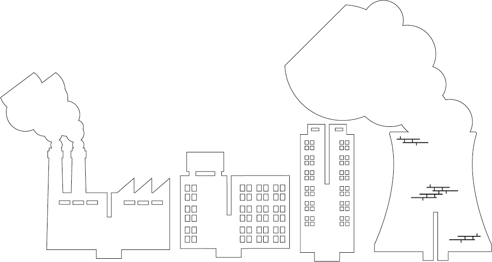
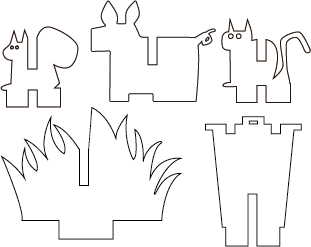
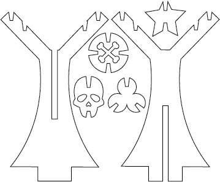

CITY DESTROYER 1
Artist Statement
Toys are not just for entertainment, they can also be used to educate your children. We wanted to create something physical, so we chose to create our own city. I mean, who didn’t want a DIY city as a kid?
Of course, we are not just building a city toy, this is a module that requires players to make choices. Nature or city is a sensitive topic in the 21st century. Ordinary people take it for granted, and people who claim to care about the environment most likely have ulterior motives.
This is a multiple-choice question, and you can’t have your cake and eat it too. Only by giving up can you gain something. This awareness seems to be gradually disappearing in the minds of young people who grew up in an overly comfortable environment. The cities we build embody this awareness and want to remind people.
We designed the pluggable and replaceable elements in Adobe After Effects. They include both urban and natural elements for players to choose and create. The plug-ins are made of wood and utilize laser cutting.
Group Tesselation
Test and Exercise
Pipe Material Design

Wood Test 1
Wood Test 2

After the Goldilock Tests, we decided to use the simplest type of fasteners, slots, to accomplish our project. Since we had a big goal of building a two sides-scene, we got to save a little time for designing the whole picture from thinking of complicated fastners. After all, the fasteners work for the projects, and the slots, indeed, fits the project perfectly.
After Effect & Laser Cutting Machine -- Presentation and Documentation of Project
My/Weikun's Design
Trees and Mountain: I/Weikun designed these main natural elements to put on the green side of the set. By putting the slots in the middle part, these pieces can be combined with city elements.
Buildings & Factories: I/Weikun designed these main city elements to put on the city side of the set. These pieces can also be combined with natrual elements with the slots created on them.
Examples

Ashley's Design:
Ashley created these pieces to decorate both sides. These little details make the whole set both lively and fun to play with. You can combine these little decoration with buildings and trees also.
Soodie's Design:
Soodie was so obsessed with these trees. She meant to design the trees and these leaves with different colors on each side, representing two opposite theme. It came out pretty awesome.


{kind=link}
{kind=link}
{kind=link}
{kind=link}
{kind=link}
{kind=link}
{kind=link}
{kind=link}
{kind=link}
{kind=link}
{kind=link}
{kind=link}
{kind=link}
{kind=link}
{kind=link}